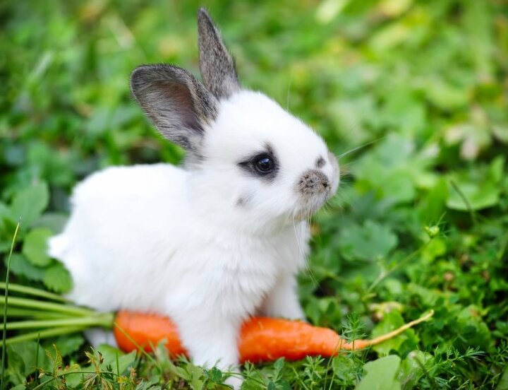

강아지( puppy , 프랑스어: Chiot )는 개의
새끼를 일컫는다. 강아지는 성체로 발달하는
과정에 있으므로 자라면서 털색이나 체형 등이
달라질 수 있으며, 정서적인 변화를 겪기도 한다.
강아지 알레르기가 있으면 강아지를 피하는 것이 좋다.

몸길이는 보통 30~60cm이며 몸무게는 2~3kg부터 7.5~8.5kg에 이르기까지 다양하다.
꼬리는 종류에 따라 길이가 다르며 보통은 22~38cm 정도이다. 발가락은 앞다리에 5개,
뒷다리에 4개가 있으며 발톱을 살 속에 감출 수 있다. 야생의 고양이가 길들여져 가축화되었으며,
야생 고양이는 산림 속에서 산다


토끼목 토끼과 동물의 총칭. 토끼목 토끼과에 속하는 동물의 총칭으로 중치류(重齒類)라고도 한다.
아프리카·아메리카·아시아·유럽에 분포하며 종류가 많다. 일반적으로 토끼라고 하면 유럽굴토끼의
축용종(畜用種)인 집토끼를 가리킬 때가 많다.

파충강 거북목 동물의 총칭. 지구상에 서식하는 파충류 중 가장 오래 전부터 존재해온 동물 중 하나로
평가되며, 가장 오래된 화석종으로는 중생대 트라이아스기 이후의 지층에서 발견되었다.